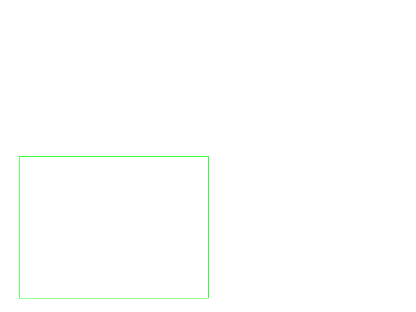

Qué es esto
Una herramienta que convierte un plano en un presupuesto en pesos mexicanos, y que muestra de dónde sale cada cifra. Cada cantidad de la tabla lleva el handle de las entidades DXF que la producen, así que se puede rastrear hasta el plano original.
Aquí se muestran dos planos reales de archivo: uno que la herramienta no puede medir, y otro que sí. El primero está puesto a propósito.
Generado el 2026-10-17 · reproducible con scripts/generar_demo.py
Caso A — Plano real que NO se puede medir
pd_escaneado.pdf
United States. Division of Home Economics, 1965 · Dominio publico (obra del gobierno de EE. UU.)
Este es un plano de obra real, de dominio público, con licencia verificable. La herramienta no puede medirlo y no va a inventar números.
| Diagnóstico | Valor |
|---|---|
| Objetos vectoriales (líneas, rectángulos, curvas) | 0 |
| Imágenes en la página | 2 |
| Caracteres de texto | 99 |
| Mediciones producidas | 0 |
Por qué importa. Un plano puede llegar como PDF aunque el original sea CAD, y si llega rasterizado no hay geometría que medir. Detectar esto y decirlo es la diferencia entre una herramienta que ayuda y una que produce números falsos.
Caso B — Plano que sí se puede medir, cifra por cifra

Plano vectorial generado por el proyecto con ezdxf. La geometría se conoce exactamente, así que cada cantidad se puede comprobar contra la verdad:
| Capa | Geometría real | Valor exacto |
|---|---|---|
| MURO-PISO | Rectángulo 8 × 6 m | 48 m² |
| MURO-TABIQUE | Línea vertical de 6 m | 6 m |
| PISO-LOSETA | Rectángulo 4 × 3 m | 12 m² |
Lo que la herramienta midió
| Capa | Cantidad | Unidad | Entidades | Handles (procedencia) |
|---|---|---|---|---|
| MURO-PISO | 48.0000 | m2 | 1 | 8D |
| MURO-PISO | 28.0000 | ml | 1 | 8D |
| MURO-TABIQUE | 6.0000 | m | 1 | 8E |
| PISO-LOSETA | 12.0000 | m2 | 1 | 8F |
| PISO-LOSETA | 14.0000 | ml | 1 | 8F |
52.3638 pt por metro, derivado del rectángulo de 8 m que mide 418.91 pt en el PDF. Sin ese dato las cantidades serían puntos, no metros.Presupuesto
| Estado | Concepto | Capa | Cant. | Und. | P. unit. | Importe | Procedencia |
|---|---|---|---|---|---|---|---|
| OK | Muro (acabado por definir) | MURO-PISO | 48.0000 | m2 | 750.00 | 36,000.00 | 8D |
| UNIDAD_INCOMPATIBLE | Muro (acabado por definir) | MURO-PISO | 28.0000 | ml | 750.00 | EXCLUIDA | 8D |
| UNIDAD_INCOMPATIBLE | Tabique de gypsum de 10 cm | MURO-TABIQUE | 6.0000 | m | sin precio | EXCLUIDA | 8E |
| OK | Piso de loseta | PISO-LOSETA | 12.9600 | m2 | 320.00 | 4,147.20 | 8F |
| UNIDAD_INCOMPATIBLE | Piso de loseta | PISO-LOSETA | 14.0000 | ml | 320.00 | EXCLUIDA | 8F |
Lo que se descartó y por qué
Estas entidades existen en el plano pero no se pudieron cotizar. No se omiten en silencio: se listan con su handle.
| Capa | Handle | Tipo | Aporta | El concepto pide | Motivo |
|---|---|---|---|---|---|
| MURO-PISO | 8D | LWPOLYLINE | ml | m2 | entidad LWPOLYLINE aporta ml pero el concepto se cotiza por m2 |
| MURO-TABIQUE | 8E | LINE | m | m2 | entidad LINE aporta m pero el concepto se cotiza por m2 |
| PISO-LOSETA | 8F | LWPOLYLINE | ml | m2 | entidad LWPOLYLINE aporta ml pero el concepto se cotiza por m2 |
Ejemplo real de por qué esto importa: el tabique de 6 m es una línea, y el concepto al que se asigna (tabique de gypsum) se cotiza por m². Multiplicar metros por un precio de m² daría un importe sin sentido que parecería correcto. La herramienta lo rechaza y lo dice, en vez de colar un número falso en el presupuesto.
Cálculo manual de tres partidas
Para que no tengas que creernos, aquí está el cálculo a mano de tres líneas y el valor que la herramienta escribió en el Excel.
| Concepto | Cálculo a mano | Importe calculado | Herramienta | ¿Coincide? |
|---|---|---|---|---|
| Tablero de distribución capa A-C-01 · handle 9E… | 1.0000 pza × 1,800.00 | 1,800.00 | 1,800.00 | sí |
| Cielo de yeso capa CIELO DE YESO · handle 9D… | 108.0000 m2 × 280.00 | 30,240.00 | 30,240.00 | sí |
| Tubería eléctrica (con canalización) capa Canal-Electrico-Piso · handle 9F… | 22.0000 m × 95.00 | 2,090.00 | 2,090.00 | sí |
| Coladera capa Coladera · handle A3… | 1.0000 pza × 350.00 | 350.00 | 350.00 | sí |
| Luminaria capa LAMPARA-PENDIENTE · handle A0, A1… | 2.0000 pza × 850.00 | 1,700.00 | 1,700.00 | sí |
| Muro de block de 15 cm capa MURO-BLOCK-15CM · handle 98… | 108.0000 m2 × 900.00 | 97,200.00 | 97,200.00 | sí |
| Piso vinílico capa PISO-VINILICO · handle 9C… | 56.7000 m2 × 450.00 | 25,515.00 | 25,515.00 | sí |
| Piso de loseta capa Piso-Loseta · handle 9B… | 29.1600 m2 × 320.00 | 9,331.20 | 9,331.20 | sí |
| Tubería hidráulica capa TUBO-HID · handle A2… | 18.4000 m × 130.00 | 2,392.00 | 2,392.00 | sí |
| Ventana capa VENTANA-A1 · handle A4, A5… | 2.0000 pza × 2,400.00 | 4,800.00 | 4,800.00 | sí |
| Suma de las 10 líneas de arriba, calculada a mano | 175,418.20 | |||
Precios de ejemplo. El cálculo manual usa la cantidad ya ajustada por rendimiento, tal como aparece en el presupuesto. La verificación de que estas tres cifras coinciden al centavo con el Excel, el PDF y el resultado de Python está en tests/test_totales.py.
Lo que esta herramienta NO sabe hacer
- No mide planos rasterizados ni escaneados. No hay OCR.
- No reconstruye las capas de CAD en un PDF: agrupa por color, que es una heurística.
- No sabe la escala de un plano: la tiene que dar el usuario.
- No tiene precios. No los propone ni los adivina.
- No lee DWG sin que instales ODA File Converter.
- No reconoce si un trazo repetido es un error del arquitecto o tres locales distintos.
- Si dos conceptos comparten una capa (por ejemplo puerta y ventana juntas), cuenta solo uno.
- No hay una sola validación con planos de obra reales de México.
Fuentes y licencias
| Archivo | Qué es | Licencia | Origen |
|---|---|---|---|
| pd_escaneado.pdf | Floor plan of a 5-bedroom house (Plan no. 7181) | Dominio publico (obra del gobierno de EE. UU.) | https://archive.org/details/CAT31371083 |
| harlem_meer_planta.pdf | Harlem Meer Restaurant — First Floor Plan (Drawing #2), 1990 | CC BY-SA 4.0 | https://commons.wikimedia.org/wiki/File:Harlem_Meer_Restaura |
| vectorial_desde_dxf.pdf | Planta vectorial de prueba (geometria conocida) | Dominio publico de las pruebas | scripts/generar_pdf_vectorial.py |
| vectorial_origen.dxf | DXF origen del plano vectorial | Dominio publico de las pruebas | scripts/generar_pdf_vectorial.py |